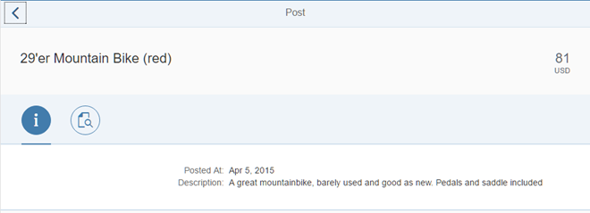

Step 16: Adding the Date Formatter
Our formatter does its job, but it is not yet used. In this step we will use it.
Preview

Date formatter in actionCoding
You can view and download all files in the Samples in the Demo Kit at Testing - Step 16.
webapp/view/Post.view.xml
…
<IconTabBar id="iconTabBar"
expanded="{device>/isNoPhone}"
class="sapUiResponsiveContentPadding">
<items>
<IconTabFilter icon="sap-icon://hint" key="info">
<form:SimpleForm>
<form:content>
<Label text="{i18n>postDateLabel}"/>
<Text text="{
path: 'Timestamp',
formatter: '.formatter.date'
}"/>
<Label text="{i18n>postDescriptionLabel}"/>
<Text text="{Description}"/>
</form:content>
</form:SimpleForm>
</IconTabFilter>
…
</items>
</IconTabBar>
…
On the Info tab we bind the date field to a format method .formatter.date of the controller of the view. The leading . indicates that the function is defined on the controller instance.
webapp/model/formatter.js
sap.ui.define([ "sap/ui/demo/bulletinboard/model/DateFormatter" ], function (DateFormatter) { ... return { ... numberUnit: function(sValue) { ... }, date: function(date) { return new DateFormatter({now: Date.now}).format(date); } }; });
In the formatter.js file, create an instance of the previously implemented DateFormatter and provide the necessary dependencies.
Now run the app again to see that the formatter is applied on the post date of the
detail page.